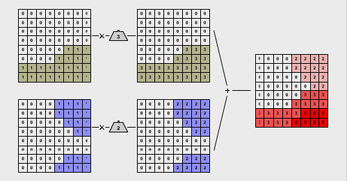
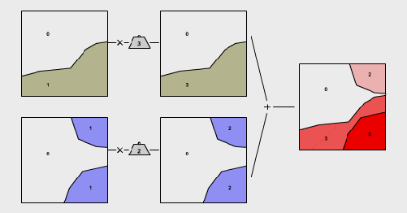

Methoden der Kriterienverschneidung
Das Prinzip der Verschneidung („overlay“) räumlicher Daten ist konzeptionell sehr einfach. Zunächst werden zwei oder mehr thematische Informationsebenen desselben Raumausschnittes überlagert. Da es sich um die Manipulation von Geometrien handelt wird die Topologie der neuen Datenebene aufgrund dieser Überlagerung neuberechnet. Bezogen auf ein Vektordatenmodell sieht das wie folgt aus: Liegt ein betrachteter Punkt innerhalb eines Polygons, erhält er diese Information als neues Attribut. Schneiden sich zwei Linien, so wird an ihrem Schnittpunkt ein neuer Knoten eingeführt. Schneiden sich zwei Polygone, erhält die Schnittmenge eine eigene Identifikationsnummer usw.. Damit diese räumliche Datenintegration korrekt ist, müssen alle Eingangsebenen ein identisches Referenzierungssystem aufweisen. Die Integration von Informationen aus verschiedenen Quellen durch Verschneidung ist eine der bedeutendsten räumlichen Grundfunktionen eines GIS.
Boolesche Verschneidung
In einfachen Eignungsanalysen führt oft bereits die logische Kombination von wahr/falsch-Informationen zur Lösung. Angenommen, der nach St. Gittal zuwandernde Wolf siedelt nur im Wald und nur in steilen Gebieten, so reichen wenige logische Überlegungen, um die geeigneten Lebensräume für den Wolf zu ermitteln. Jedes dieser beiden Kriterien kann mit einer binären Informationsebene modelliert werden (Wald/Nicht-Wald und Steil/Nicht-Steil). Als potenzielle Lebensräume eignen sich nun genau die Gebiete, für die beide Kriterien zutreffen. Mit anderen Worten: Gebiete, die „wahr“ sind für Wald UND für steil. Die dritte Lerneinheit hat uns hierzu bereits die möglichen Verknüpfungsmethoden bekannt gemacht.
Die Boolesche Verschneidung eignet sich v. a. bei Eignungsanalysen mit randscharfen und klar ausschliessenden Kriterien. Kann als Wolfslebensraum das Siedlungsgebiet und die landwirtschaftliche Nutzfläche von Anfang an ausgeschlossen werden, kann das potenzielle Eignungsgebiet mit einer einfachen Booleschen Verschneidung rasch stark und trennscharf eingeschränkt werden. Für viele Fragen ist allerdings die Einteilung der Welt in nur zwei Kategorien unbefriedigend. Weiter lassen sich v. a. für Kriterien der natürlichen Umwelt selten trennscharfe Grenzen angeben. In der nächsten Unit lernen Sie feiner abstimmbare Ansätze der Eignungsanalyse mit GIS kennen.
Die gewichtete Verschneidung
Für viele Fragestellungen stellt die Einteilung der Realität in zwei Kategorien („wahr“ oder „falsch“) allerdings eine unzureichende Abbildung der Realität dar, da die gleiche Gewichtung der Einflussfaktoren meist nicht der Gewichtung von Entscheidungen abbildet. Wer ein neues Mobiltelefon kauft, mag Marke und Funktion höher gewichten als Displaygröße, Preis oder Robustheit. Dieses allgemeine Prinzip der Gewichtung von Einflussfaktoren wird auch bei der Eignungsanalyse mit GIS verwendet. Der entsprechende Ansatz heißt gewichtete Verschneidung.
In vielen Raumanalysen sind bestimmte Kriterien bezogen auf die Zielsetzung um ein Mehrfaches wichtiger als andere. Oft ist es gerade ein Anspruch an eine Standortsuche, mehrere geeignete Orte darauf hin zu vergleichen, ob und wie stark sie einer Reihe von unterschiedlich wichtigen Kriterien entsprechen. Durch das Ebenenprinzip der GI-Systeme lässt sich die Verschneidung sehr einfach um die Idee unterschiedlich wichtiger Kriterien erweitern. Jeder Themenebene wird entsprechend ihrer relativen Bedeutung gegenüber den anderen ein numerischer Gewichtsfaktor zugeordnet. Anschließend werden die derart gewichteten Informationsebenen verschnitten wie bisher. Wie die Boolesche Verschneidung ist auch die gewichtete Verschneidung grundsätzlich sowohl im Raster- als auch im Vektormodell möglich. Die Tourismusexperten von Rarotonga könnten beispielsweise erklären, die negative Wirkung von Hotels und Bars sei für unser Alternativtourismuskonzept 0,1-mal so wichtig wie Der Störfaktor von Quad-Trek-Routen durchs Binnenland. Die entsprechende Gewichtung ergäbe für die Hotels und Bars einen Gewichtsfaktor von 1, für die die Tracks hingegen von 10. Es gilt zu beachten, dass die Wertebereiche der Eingangs-Informationsebenen normalisiert sein müssen (z. B. von 0 bis 1). In der entstehenden Eignungsebene werden die geeigneten Räume oder Standorte durch besonders hohe Werte identifizierbar.
Wölfe in St. Gittal
Betrachten Sie das folgende Beispiel. Hier wird die gewichtete Verschneidung am Beispiel des Wolfslebensraumes in St. Gittal eingeführt. Im Hinblick auf eine realistischere Modellierung der geeigneten Lebensräume verwendet das folgende Beispiel nicht mehr ausschließlich binäre Eingangsdaten wie die Boolesche Verschneidung, sondern sogenannte Ratiodaten:
- Vegetationsdichte anstelle „Wald/Nicht-Wald“
- Hangneigung anstelle „steil/nicht-steil“
- Bevölkerungsdichte anstelle „Siedlung/Nicht-Siedlung“
Der wohl einfachste Ansatz für eine gewichtete Verschneidung bildet die gewichtete lineare Summierung im Rastermodell. Die folgenden Punkte zeigen das Standardvorgehen bei der Anwendung dieses Algorithmus:
- Kriterienwahl: Der erste Schritt besteht in der Wahl der Kriterien, die den gesuchten Raum charakterisieren.
- Standardisierung: Nun müssen die
unterschiedlichen Messskalen der Eingangsdatensätze aufeinander abgestimmt
werden. Es wenig sinnvoll, die prozentuale Hangneigung direkt mit einer
Bevölkerungsdichte zu verrechnen. Deshalb weist man den Eingangsdaten völlig
verschiedene Einheiten einer standardisierten numerischen Indexskala zu
(beispielsweise 0–1, 0–100, 0–255). Daraus folgt, dass die Werte der
resultierenden Eignungsebenen keine Einheiten mehr tragen, sondern lediglich
einen numerischen Eignungsindex. Die Zuordnung der Eingangswerte auf die
Indexskala kann auf verschiedene Weise erfolgen, am einfachsten ist eine
lineare Zuordnung. Bei der gewichteten Verschneidung bezeichnet die
 Standardisierung die
Übersetzung der heterogenen Eingangsdaten in eine für alle Ebenen
einheitliche Skala.
Standardisierung die
Übersetzung der heterogenen Eingangsdaten in eine für alle Ebenen
einheitliche Skala. - Verteilung der Gewichte: Weiter erhält jede Informationsebene einen Multiplikator, ein Gewicht. Die Gewichte widerspiegeln die relative Bedeutung der Informationsebenen zueinander. Die wichtigste Ebene erhält das größte Gewicht. Die richtige Wahl der Gewichte wird in „Bestimmung der Gewichte“ behandelt.
- Anwendung des Algorithmus: Beim Algorithmus der gewichteten linearen Summierung werden alle Rasterzellen einer Informationsebene mit ihrem Gewicht multipliziert und die Ebenen anschließend addiert. In der resultierenden Eignungsebene weisen die geeigneten Rasterzellen hohe, die ungeeigneten hingegen tiefe Werte auf.

Weighted Overlay im Rastermodell
Weighted Overlay im VektormodellIn dieser Darstellung erhielten die beiden Eignungskriterien für den
Wolfslebensraum in St. Gittal Gewichte entsprechend ihrer relativen Bedeutung.
Die Infomationsebene „bewaldet“ wird mit dem Faktor 3 gewichtet, diejenige mit
dem Kriterium „steiles Gelände“ mit dem Faktor 2. Nach der Zuweisung der
Gewichte werden die beiden Ebenen addiert. Die Eignungswerte der resultierenden
Informationsebene reichen von 0 (ungeeignet) bis 5 (sehr geeignet).
Bearbeiten Sie...
Die nachfolgende interaktive Beispielanwendung gibt Ihnen die Möglichkeit, selbst für die Gemeinde St. Gittal eine Eignungsanalyse zur Bestimmung potenzieller Lebensräume des Wolfs durchzuführen. Bestimmen Sie, wie die Eingangs-Layer standardisiert und gewichtet werden sollen. Nutzen sie hierzu die folgenden Informationen:
- Kriterienwahl: Sie haben bereits früher
gelesen, dass der Wolf dichte Vegetation und steiles, steiniges
Gelände bevorzugt. Neu können Sie nun auch berücksichtigen, dass er
die Nähe zur Siedlung eher meidet. Folgende Informationsebenen
stehen Ihnen zur Verfügung:
- Walddichte (oberste Zeile): Räume mit einem Bewuchs von 0 bis 100% Wald.
- Hangneigung (mittlere Zeile): Neigungsklassen von <10%, 10% bis 30% und >30%.
- Siedlungsdichte (unterste Zeile): Die Themenebene der Siedlungsdichte beinhaltet Räume mit 0, 100 und 200 Einwohnern pro Hektare.
- Standardisierung: Alle Eingaberaster müssen nun auf den Wertebereich von 0 bis 1 umgerechnet werden. In der Animation müssen Sie die Werte 0 und 1 in die dafür vorgesehenen Felder eintragen. Beachten Sie, dass bei gewissen Themenebenen zusätzlich zur Standardisierung auch noch der Wertebereich invertiert werden muss. Dies geschieht immer dann, wenn ein hoher Wert der Eingangsebene ungeeignet für den Wolf ist und deshalb den Wert 0 erhalten muss.
- Verteilung der Gewichte: Nun müssen Sie als Wolfsexperte oder -expertin den einzelnen Ebenen Gewichte zuweisen. Tragen Sie dazu die Gewichte in die gewichtssteinförmigen Felder ein. Weisen Sie dem schützenden Wald die größte Bedeutung zu und gewichten Sie die Waldebene mit 5. Die Hangneigung erhält das Gewicht 3, die unbesiedelten Gebiete das Gewicht 2.
- Anwendung des Algorithmus: Die gesuchte Eignungsebene ergibt sich aus der Multiplikation der Ebenen mit ihren Gewichten und der abschließenden Summierung der Ebenen. Ein Klick auf die Taste „Berechnen“ liefert die Resultate. Die nach den getroffenen Annahmen geeignetsten Lebensräume für den Wolf weisen nun die Werte zwischen 7,5 und 8,5 auf. Ungeeignete Gebiete tragen tiefe Werte bis hin zu ungeeignet (= 0).
Nun liegt es an Ihnen, weitere Standardisierungen und Gewichtungen auszuprobieren. Experimentieren Sie mit extremen Gewichtsverteilungen. Achten Sie jeweils darauf, wie sich die resultierende Eignungskarte verändert und interpretieren Sie die Resultate.
Beispiel einer einfachen gewichtete lineare Summation von Kriterien zur Entscheidungsfindung (GITTA 2005)